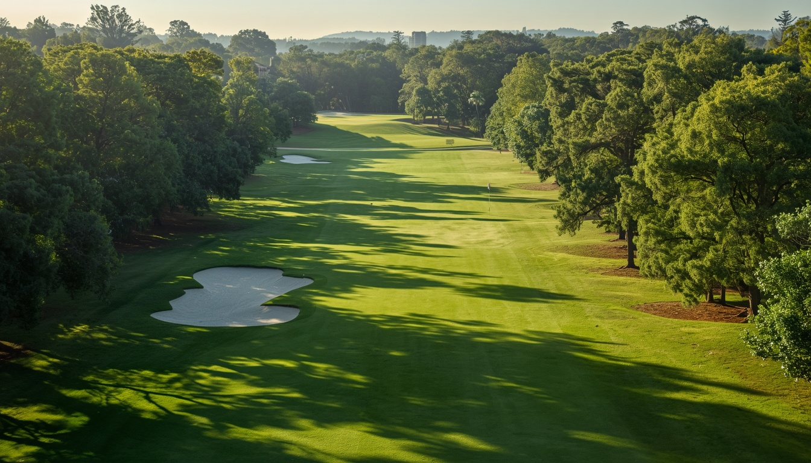

Course Tour
Eighteen holes, shaped by the trees.
Explore the routing, strategy, and green complexes that define Alderwick.
Fictional demonstration property with sample content and reference imagery.

Hole 1 Front Nine
Parkgate
Par 4
408
Championship
384
Member
322
Forward
5
Stroke Index
A gentle opener between mature oaks. A fairway wood from the tee leaves a comfortable mid-iron; the green sits slightly above the fairway, so favor the back of the surface to hold your approach.
View Course Overview
A simplified routing plan of the eighteen holes. Select a numbered marker to jump to that hole. This overview is informational; use the numbers above to move through the tour.
| Hole | 1 | 2 | 3 | 4 | 5 | 6 | 7 | 8 | 9 | Out | 10 | 11 | 12 | 13 | 14 | 15 | 16 | 17 | 18 | In | Tot |
|---|---|---|---|---|---|---|---|---|---|---|---|---|---|---|---|---|---|---|---|---|---|
| Champ. | 408 | 431 | 188 | 520 | 421 | 398 | 426 | 172 | 534 | 3498 | 415 | 447 | 548 | 205 | 402 | 458 | 181 | 436 | 535 | 3627 | 7125 |
| Par | 4 | 4 | 3 | 5 | 4 | 4 | 4 | 3 | 5 | 36 | 4 | 4 | 5 | 3 | 4 | 4 | 3 | 4 | 5 | 36 | 72 |
| Hcp | 5 | 3 | 15 | 11 | 9 | 13 | 1 | 17 | 7 | — | 8 | 2 | 12 | 16 | 10 | 4 | 18 | 6 | 14 | — | — |